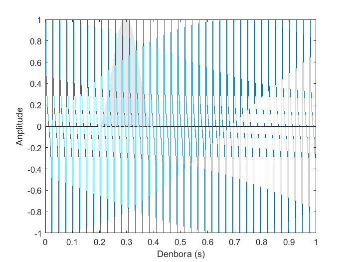

Bistaratze-leihoa
Leiho honek aukeratutako seinalearen espektroa hainbat metodoen bidez aztertzeko aukera ematen du: Fourier Transformatua, Denbora Murriztuko Fourier Transformatua eta espektrograma.
Interfazea
Fourier Transformatua
Audio seinalearen Fourier Transformatua ikusteko aukera ematen du.
-
Seinalearen ikuspegia: Bistaratzeko leihoan kargatutako audio-seinalea erakusten du.
-
Erreprodukzio-botoiak: Audio-seinalearen erreprodukzioa kontrolatzea ahalbidetzen dute.
- Eskuineko botoiak erreprodukzioa seinalearen hasieratik hasten du.
- Zentroko botoiak erreprodukzioa hasten du, seinalearen gainean klik eginez jarritako kurtsoretik abiatuta.
- Ezkerreko botoiak erreprodukzioa gelditzen du.
-
Esportatzeko botoia: Seinalea edo espektroa .csv edo .xls fitxategi batera esportatzeko balio du. Seinalea .wav soinu-fitxategi giza gorda ahal da.
-
Seinalearen nabigazio-panela

-
Ardatz bertikalean ikuspegia handitzeko eta murrizteko balio dute.
-
Ardatz horizontaleko ikuspegia handitzeko eta murrizteko balio dute.
-
Jatorrizko ikuspegia leheneratzen du.
-
Ikuspegitik mugitzeko balio dute.
-
Bista aldatzeko botoiak: Ikuspegi bat handitzeko balio du.
-
Informazio espektralaren ikuspegia: Hemen ikus daiteke seinalearen informazio espektrala, hautatutako metodoaren bidez lortua.
-
Informazio espektralaren nabigazio-panela: Informazio espektralaren ikuspegian nabigatzeko balio du. Seinalearen nabigazio-panelaren modu berean funtzionatzen du.
-
Modua hautatzea: Seinalearen espektro-informazioa lortzeko metodoa hautatzea ahalbidetzen du.
Eskuineko botoia: Grafiko baten gainean eskuineko botoiarein klikatzean menu bat agertzen da. Aukera hauek eskaintzen ditu:
-
Grafikoa irudi giza esportatu.
-
Anplitude-ardatzaren eskala linealaren edo logaritmikoaren artean aldatzeko.
STFT
Audio seinalearen Denbora Murriztuko Fourierren Transformazioa (STFT) behatzea ahalbidetzen du.
-
Leihoa: STFT kalkulatzeko erabiltzen den leihoa. Posizioa alda daiteke seinalearen gainean klik eginez.
-
Leiho formako hautagailua
-
Leihoaren tamainaren hautagailua: Leihoaren tamaina segundotan sartzeko aukera ematen du (0.001 eta 1 artean).
-
Nfft hautagailua: Transformatuaren puntu kopurua hautatzeko aukera ematen du, aukera erabilgarrien artean.
Espectrograma
Seinalearen espectrograma ikustea ahalbidetzen du.
STFT + Espectrograma
Seinalearen STFT behatzea eta espectrograman duen posizioa ikustea ahalbidetzen du.
Fourierren Transformatua denboraren domeinuan dauden seinaleak (kasu honetan audio seinalea) frekuentziaren domeinura eraldatzeko erabiltzen den transformazio matematiko bat da. Emaitzak seinalearen maiztasun-edukia erakusten du. Laburbilduz, seinale bat frekuentzia desberdineko tonu puruetan deskonposatzeko hurbilketa bat da.
f(t) seinale bat denboraren domeinuan izanik, eta ω = 2𝜋f. F(ω) lortutako Fourierren Transformatua da.
Kasu honetan, audio seinalea ez da seinale jarraitua, seinale diskretua baizik, hau da, lagin multzo batez osatua. Beraz, benetan, Fourierren Transformazio Diskretu bat egiten ari da, matematikoki honela definitzen dena:
x[n] audio seinalea izanik, N laginekin, eta ω = 2𝜋f. X(ω) lortutako Fourierren Transformatu Diskreta da.
Denbora Murriztuko Fourier Transformatua (STFT)
Fourierren Transformazio Diskreta seinalearen segmentu baten gainean egitean datza, seinale osoaren gainean egin beharrean. Seinalearen segmentu hori jatorrizko seinalea leiho batekin biderkatuz lortzen da. Era horretan, leiho barruan geratzen diren seinalearen laginak bakarrik hartuko dira kontuan. Lagin horien balioak leihoaren formaren arabera aldatuko dira (leiho angeluzuzenaren kasuan izan ezik).

|

|
| Seinale bati aplikatutako leiho angeluzuzena
|
|

|

|
| Seinale bati aplikatutako leiho angeluzuzena
|
Espectrograma
Audio-seinalearen garapen frekuentziala denboran zehar ikustea ahalbidetzen duen irudikapena da. Ardatz horizontalean denborazko ardatzarekin bat dator, ardatz bertikala frekuentzialarekin, eta potentzia espektral-dentsitatea aldakuntza kolore degradatu baten bidez irudikatzen da.
Espektrograma hainbat STFT jarraian eginez kalkulatzen da, aukeratutako leihoarekin ekorketa bat eginez.